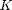
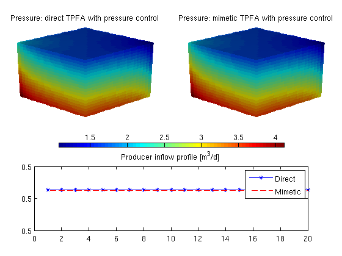
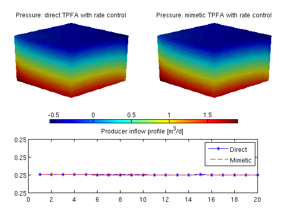

Contents
- Two-Point Flux Approximation Solvers with gravity
- Define and process geometry
- Set rock and fluid data
- Introduce wells
- APPROACH 1: Direct/Classic TPFA
- APPROACH 2: Mimetic with TPFA-inner product
- Report results
- Rate controlled wells
- APPROACH 1: Direct/Classic TPFA
- APPROACH 2: Mimetic with TPFA-inner product
- Report results
Two-Point Flux Approximation Solvers with gravity
gravity reset on
Define and process geometry
Construct a Cartesian grid of size 10-by-10-by-4 cells, where each cell has dimension 1-by-1-by-1. Because our flow solvers are applicable for general unstructured grids, the Cartesian grid is here represented using an unstructured format in which cells, faces, nodes, etc. are given explicitly.
nx = 20; ny = 20; nz = 20;
G = cartGrid([nx, ny, nz]);
G = computeGeometry(G, 'Verbose', true);
Computing normals, areas, and centroids... Elapsed time is 0.019877 seconds. Computing cell volumes and centroids... Elapsed time is 0.634954 seconds.
Set rock and fluid data
The only parameters in the single-phase pressure equation are the permeability , which here is homogeneous, isotropic and equal 100 mD. The fluid has density 1000 kg/m^3 and viscosity 1 cP.
rock.perm = repmat(100 * milli*darcy, [G.cells.num, 1]); fluid = initSingleFluid('mu' , 1*centi*poise, ... 'rho', 1014*kilogram/meter^3);
Introduce wells
We will include two vertical pressure-controlled wells. The wells are described using a Peacemann model, giving an extra set of (trivial) equations that need to be assembled. We need to specify ('InnerProduct', 'ip_tpf') to get the correct well model for TPFA.
cellsWell1 = 1 : nx*ny : nx*ny*nz; W = addWell([], G, rock, cellsWell1, ... 'Type', 'bhp', 'Val', 2.2049*barsa(), ... 'InnerProduct', 'ip_tpf', 'Comp_i', [1, 0]); cellsWell2 = nx*ny: nx*ny : nx*ny*nz; W = addWell(W, G, rock, cellsWell2, ... 'Type', 'bhp' , 'Val', 1.0*barsa(), ... 'InnerProduct', 'ip_tpf', 'Comp_i', [0, 1]);
APPROACH 1: Direct/Classic TPFA
Initialize solution structures for reservoir and wells.
resSol1 = initState(G, W, 1.0*barsa, [1, 0]); % Compute one-sided transmissibilities. T = computeTrans(G, rock, 'Verbose', true); % Solve linear system construced from T and W to obtain solution for flow % and pressure in the reservoir and the wells. Notice that the TPFA solver % is different from the one used for mimetic systems. resSol1 = incompTPFA(resSol1, G, T, fluid, 'wells', W, 'Verbose', true);
Computing one-sided transmissibilities... Elapsed time is 0.006121 seconds. Setting up linear system... Elapsed time is 0.015100 seconds. Solving linear system... Elapsed time is 0.047124 seconds. Computing fluxes, face pressures etc... Elapsed time is 0.003301 seconds.
APPROACH 2: Mimetic with TPFA-inner product
Initialize solution structures for reservoir and wells.
resSol2 = initState(G, W, 0, [1,0]); % Compute mimetic innerproduct equivalent to two-point flux for Cartesian % grids. IP = computeMimeticIP(G, rock, 'Verbose', true, ... 'InnerProduct', 'ip_tpf');
Using inner product: 'ip_tpf'. Computing cell inner products ... Elapsed time is 0.165868 seconds. Assembling global inner product matrix ... Elapsed time is 0.007304 seconds.
Solve mimetic linear hybrid system
resSol2 = solveIncompFlow(resSol2, G, IP, fluid, 'wells', W);
Report results
Report pressure drop computed by the two solvers.
dp = @(x) convertTo(x.wellSol(1).pressure - ... x.wellSol(2).pressure, barsa); disp(['DeltaP, direct TPFA: ', num2str(dp(resSol1))]) disp(['DeltaP, mimetic TPFA: ', num2str(dp(resSol2))])
DeltaP, direct TPFA: 1.2049 DeltaP, mimetic TPFA: 1.2049
Plot the pressure and producer inflow profile
clf subplot('Position', [0.05,0.55,0.4, 0.35]) plotCellData(G, convertTo(resSol1.pressure(1:G.cells.num), barsa())); title('Pressure: direct TPFA with pressure control') view(45, 25), camproj perspective, axis tight off, camlight headlight cax = caxis; subplot('Position', [0.55,0.55,0.4, 0.35]) plotCellData(G, convertTo(resSol2.pressure(1:G.cells.num), barsa())); title('Pressure: mimetic TPFA with pressure control') view(45, 25), camproj perspective, axis tight off, camlight headlight caxis(cax); subplot('Position', [0.15,0.4,0.7, 0.08]) colorbar south; caxis(cax);axis tight off; subplot('position', [0.1, 0.1, 0.8, 0.25]) plot(-resSol1.wellSol(2).flux .* day(), 'b-*'); hold on plot(-resSol2.wellSol(2).flux .* day(), 'r--'); legend('Direct','Mimetic') title('Producer inflow profile [m^3/d]');
Rate controlled wells
W = addWell([], G, rock, cellsWell1, ... 'Type', 'rate', 'Val', 5.0/day(), ... 'InnerProduct', 'ip_tpf', 'Comp_i', [1, 0]); W = addWell(W, G, rock, cellsWell2, ... 'Type', 'rate' , 'Val', -5.0/day(), ... 'InnerProduct', 'ip_tpf', 'Comp_i', [0, 1]);
APPROACH 1: Direct/Classic TPFA
resSol1 = initState(G, W, 0, [1, 0]); resSol1 = incompTPFA(resSol1, G, T, fluid, 'wells', W, 'Verbose', true);
Setting up linear system... Elapsed time is 0.014140 seconds. Solving linear system... Elapsed time is 0.032699 seconds. Computing fluxes, face pressures etc... Elapsed time is 0.003176 seconds.
APPROACH 2: Mimetic with TPFA-inner product
resSol2 = initState(G, W, 0, [1, 0]);
resSol2 = solveIncompFlow(resSol2, G, IP, fluid, 'wells', W);
Report results
Report pressure drop computed by the two solvers.
disp(['DeltaP, direct TPFA: ', num2str(dp(resSol1))]) disp(['DeltaP, mimetic TPFA: ', num2str(dp(resSol1))])
DeltaP, direct TPFA: 0.60245 DeltaP, mimetic TPFA: 0.60245
Plot the pressure and producer inflow profile
clf subplot('Position', [0.05,0.55,0.4, 0.35]) plotCellData(G, convertTo(resSol1.pressure(1:G.cells.num), barsa())); title('Pressure: direct TPFA with rate control') view(45, 25), camproj perspective, axis tight off, camlight headlight cax = caxis; subplot('Position', [0.55,0.55,0.4, 0.35]) plotCellData(G, convertTo(resSol2.pressure(1:G.cells.num), barsa())); title('Pressure: mimetic TPFA with rate control') view(45, 25), camproj perspective, axis tight off, camlight headlight caxis(cax); subplot('Position', [0.15,0.4,0.7, 0.08]) colorbar south; caxis(cax);axis tight off; subplot('position', [0.1, 0.1, 0.8, 0.25]) plot(-resSol1.wellSol(2).flux .* day(), 'b-*'); hold on plot(-resSol2.wellSol(2).flux .* day(), 'r--'); legend('Direct','Mimetic') title('Producer inflow profile [m^3/d]');